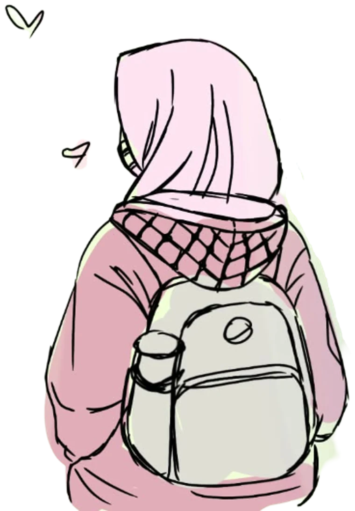

The idea: put "English or Bahasa Indonesia" where someone is about to contact you, in plain sentence style, and stop stacking another small line of text at the top. Nothing else on the pages changes.
Where the question arises: right beside the button. Plain sentence, same font as the paragraph above. The extra mono line under your role is gone, so the top of the hero is calmer than it was.
I'm Amiw
Software Engineer | C#/.NET, TypeScript,
Linux Infrastructure & Software Delivery
I rarely write code. I focus on understanding what you need and making it happen.
Stack-agnostic. Good at C#/.NET and TypeScript, but happy with WordPress if that's what gets the job done.
Write to me in English or Bahasa Indonesia. I'm in Jakarta (GMT+7).

The playful one. No sentence needed: the figure greets in both languages. It fits your illustrated style, but it only hints at the languages, so it's less explicit than A.
I'm Amiw
Software Engineer | C#/.NET, TypeScript,
Linux Infrastructure & Software Delivery
I rarely write code. I focus on understanding what you need and making it happen.
Stack-agnostic. Good at C#/.NET and TypeScript, but happy with WordPress if that's what gets the job done.
Uses the empty space at the end of the "→ Work with me → Projects → Experience" row, like a status bar. Out of the way, but easy to miss, and nowhere near the contact button.
I'm Amiw
Software Engineer | C#/.NET, TypeScript,
Linux Infrastructure & Software Delivery
I rarely write code. I focus on understanding what you need and making it happen.
Stack-agnostic. Good at C#/.NET and TypeScript, but happy with WordPress if that's what gets the job done.
Same idea as the homepage A: next to the buttons you press to contact me. The top of the page goes back to just the intro and the four facts, no extra line. (The folded answer in "Good to know" stays.)
Websites for small businesses, and automation for repetitive work. I also have experience building software for GDPR compliance.
The first call is free. Tell me what you want, any deadline and a rough budget. I reply within one working day.
Write to me in English or Bahasa Indonesia. I'm in Jakarta (GMT+7).
The simplest: the language joins the intro paragraph as a normal sentence. It's seen first, but it makes the intro longer, and it's far from the buttons.
Websites for small businesses, and automation for repetitive work. I also have experience building software for GDPR compliance. We can work in English or Bahasa Indonesia, from Jakarta (GMT+7).